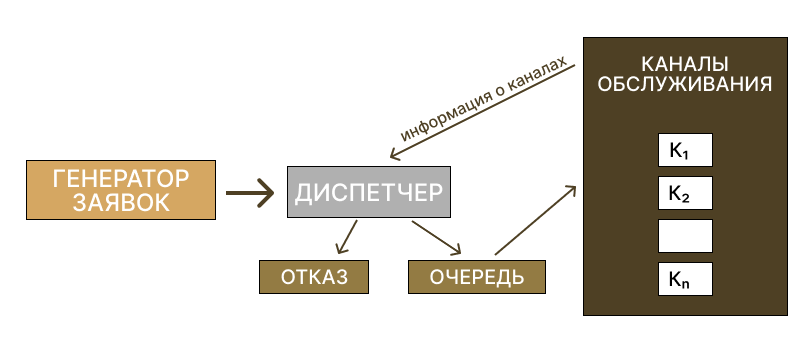

Лабораторная Работа №1
Моделирование
Моделирование — исследование объектов познания на их моделях; построение и изучение моделей реально существующих объектов, процессов или явлений с целью получения объяснений этих явлений, а также для предсказания явлений, интересующих исследователя.
Процесс моделирования включает три элемента:
- субъект (исследователь),
- объект исследования,
- модель, определяющую (отражающую) отношения познающего субъекта и познаваемого объекта.
Основные этапы моделирования
1. Симуляция - это комплексные процессы поведения модели в рамках заданных условий моделирования. Симуляция приводит модель к жизни и показывает, как будет вести себя конкретный объект или явление.
Статичная симуляция предоставляет информацию о системе в определённый заданный момент времени (обычно при равновесии, если такое состояние существует).
Динамическая симуляция предоставляет информацию в ходе течения времени.
Симуляция может быть полезна для тестирования, анализа или обучения в тех случаях, когда модели или концепции реального мира.
2. Структура является фундаментальным, но зачастую неосязаемым понятием, которое вбирает в себя распознавание, наблюдение, генезис, сохранение постоянства закономерностей и отношений моделируемых сущностей.
От словесного описания ребёнком снежинки до детального научного анализа свойств магнитных полей, понятие структуры является основой почти каждого способа исследования и открытия в науке, философии и искусстве.
3. Система представляет собой набор взаимодействующих или взаимозависимых сущностей, реальных или абстрактных, образующих интегрированное целое.
В общем, система представляет собой конструкцию или набор различных элементов, которые вместе могут приводить к результатам, которые не могут быть получены только самими элементами.
Существует два типа системных моделей:
- дискретный, в котором переменные мгновенно меняются в отдельные моменты времени;
- непрерывный, когда переменные состояния непрерывно изменяются по времени.
4. создание модели
Моделирование - это процесс создания модели как концептуального представления некоторого явления. Обычно модель будет иметь дело только с некоторыми аспектами рассматриваемого явления, и две модели одного и того же явления могут существенно отличаться, т.е. различия между ними будут не только в простом переименовании их составляющих компонентов.
5. Оценка модели
Параметры:
- Возможность объяснения прошлых наблюдений
- Возможность прогнозирования будущих наблюдений
- Стоимость использования, особенно в сочетании с другими моделями
- Простота или даже эстетическая привлекательность
6. Визуализация - это любой способ создания изображений, диаграмм или анимаций для коммуникационного сообщения. Визуализация с помощью образов была эффективным способом коммуникационного обмена.
Виды моделирования
В настоящее время по технологии моделирования и области применения выделяют такие основные виды моделирования:
- Информационное моделирование
- Компьютерное моделирование
- Математическое моделирование
- Имитационное моделирование
- Биологическое моделирование
- Математическое моделирование социально-исторических процессов
- Математико-картографическое моделирование
- Молекулярное моделирование и другие
Информационная модель — модель объекта, представленная в виде информации, описывающей существенные для данного рассмотрения параметры и переменные величины объекта, связи между ними, входы и выходы объекта и позволяющая путём подачи на модель информации об изменениях входных величин моделировать возможные состояния объекта.
Компьютерное моделирование - построение с помощью компьютеров и компьютерных устройств (3D-сканеров, 3D-принтеров и др.) символьных и физических моделей объектов.
Математическая модель — математическое представление реальности, один из вариантов модели как системы, исследование которой позволяет получать информацию о некоторой другой системе. Математическая модель предназначена предсказать поведение реального объекта, но всегда представляет собой ту или иную степень его идеализации.
Имитационное моделирование (англ. simulation modeling) — метод исследования, при котором изучаемая система заменяется моделью, с достаточной точностью описывающей реальную систему (построенная модель описывает процессы так, как они проходили бы в действительности), с которой проводятся эксперименты с целью получения информации об этой системе.
К имитационному моделированию прибегают, когда:
- дорого или невозможно экспериментировать на реальном объекте;
- невозможно построить аналитическую модель: в системе есть время, причинные связи, последствия, нелинейности, стохастические (случайные) переменные;
- необходимо сымитировать поведение системы во времени.
Цель имитационного моделирования состоит в воспроизведении поведения исследуемой системы на основе результатов анализа наиболее существенных взаимосвязей между её элементами или другими словами — разработке симулятора (англ. simulation modeling) исследуемой предметной области для проведения различных экспериментов.
Виды имитационного моделирования
- Дискретно-событийное моделирование — подход к моделированию, предлагающий абстрагироваться от непрерывной природы событий и рассматривать только основные события моделируемой системы, такие, как: «ожидание», «обработка заказа», «движение с грузом», «разгрузка» и другие. Дискретно-событийное моделирование наиболее развито и имеет огромную сферу приложений — от логистики и систем массового обслуживания до транспортных и производственных систем. Этот вид моделирования наиболее подходит для моделирования производственных процессов. Основан Джеффри Гордоном в 1960-х годах.
- Системная динамика — парадигма моделирования, где для исследуемой системы строятся графические диаграммы причинных связей и глобальных влияний одних параметров на другие во времени, а затем созданная на основе этих диаграмм модель имитируется на компьютере. По сути, такой вид моделирования более всех других парадигм помогает понять суть происходящего выявления причинно-следственных связей между объектами и явлениями. С помощью системной динамики строят модели бизнес-процессов, развития города, модели производства, динамики популяции, экологии и развития эпидемии. Метод основан Джеем Форрестером в 1950 годах.
- Агентное моделирование — относительно новое (1990-е-2000-е гг.) направление в имитационном моделировании, которое используется для исследования децентрализованных систем, динамика функционирования которых определяется не глобальными правилами и законами (как в других парадигмах моделирования), а наоборот, когда эти глобальные правила и законы являются результатом индивидуальной активности членов группы. Цель агентных моделей — получить представление об этих глобальных правилах, общем поведении системы, исходя из предположений об индивидуальном, частном поведении её отдельных активных объектов и взаимодействии этих объектов в системе. Агент — некая сущность, обладающая активностью, автономным поведением, может принимать решения в соответствии с некоторым набором правил, взаимодействовать с окружением, а также самостоятельно изменяться.
Системы массового обслуживания
Системы массового обслуживания – это такие системы, в которые в случайные моменты времени поступают заявки на обслуживание, при этом поступившие заявки обслуживаются с помощью имеющихся в распоряжении системы каналов обслуживания.
Рассмотрим схему работы СМО (рис. 1). Система состоит из генератора заявок, диспетчера и узла обслуживания, узла учета отказов (терминатора, уничтожителя заявок). Узел обслуживания в общем случае может иметь несколько каналов обслуживания.
Рис. 1. Схема работы СМО.
- Генератор заявок — объект, порождающий заявки: улица, цех с установленными агрегатами. На вход поступает поток заявок (поток покупателей в магазин, поток сломавшихся агрегатов (машин, станков) на ремонт, поток посетителей в гардероб, поток машин на АЗС и т. д.).
- Диспетчер — человек или устройство, которое знает, что делать с заявкой. Узел, регулирующий и направляющий заявки к каналам обслуживания.
- Очередь — накопитель заявок. Очередь может отсутствовать.
- Узел обслуживания — состоит из конечного числа каналов обслуживания. Каждый канал имеет 3 состояния: свободен, занят, не работает. Если все каналы заняты, то можно придумать стратегию, кому передавать заявку.
- Отказ — наступает, если все каналы заняты (некоторые в том числе могут не работать).
Язык программирования GPSS
GPSS (англ. General Purpose Simulation System — система моделирования общего назначения) — язык моделирования, используемый для имитационного моделирования различных систем, в основном систем массового обслуживания.
Основные операции в GPSS включают:
- GENERATE — генерация потока транзактов.
- QUEUE — вход в очередь.
- SEIZE — захват устройства.
- ADVANCE — моделирование процесса обслуживания.
- RELEASE — освобождение устройства.
- TERMINATE — завершение транзакта.
Пример кода GPSS:
GENERATE (POISSON(1,40)) ; Генерация потока транзактов
QUEUE main ; Войти в очередь
SEIZE FOO7 ; Захват устройства
DEPART mainQ ; Покинуть очередь
ADVANCE (Normal(1,35,4)) ; Процесс обслуживания
RELEASE F07 ; Освобождение устройства
TERMINATE ; Завершение транзакта
Динамическим элементом модели является транзакт — абстрактный объект, который перемещается между статическими элементами, воспроизводя различные события реального моделируемого объекта. В процессе работы модели накапливается статистика, автоматически выводимая по завершении процесса моделирования. Статические элементы модели: источники транзактов, устройства, очереди и другие. Их расположение в модели определяется блоками.